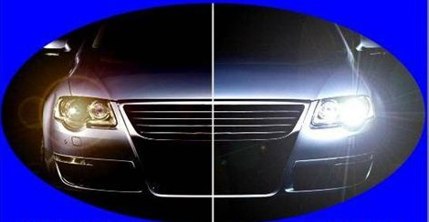

Xenoni

UGRADNJA XENON SIJALICA I XENON KOMPLETA:
U ponudi su Xenon sijalice proverenih marki: Philips i M tech
sa i bez Can busa (ponistivaca greske)
Xenon kompleti odgovaraju: h1, h3, h4, h7, h8, h9, h11, hb3, hb4, hb5
200% jače svetlo , 2500 radnih sati, 12-24 meseci garancije
Remont alnasera

Zbog vremenskih uslova i različitih režima rada dolazi do oštećenja alnasera i alternatora.Zbog lošeg kvaliteta benzinskih i dizel goriva dolazi do težeg startovanja motora što može dovesti do pregrevanja i oštećenja alnasera.
Kako bi se izbegla oštećenja alnasera nije preporučljivo startovati motor duže od 20 sekundi i obavezno se obratiti serviseru ukoliko se uoči curenje ulja ili goriva koje može uzrokovati oštećenje alnasera odnosno startera.
Parking senzori
Sistem za pomoć pri parkiranju meri rastojanje Vašeg vozila do prepreke, i ukoliko je to rastojanje manje od bezbednog, sistem Vas upozorava zvučnim signalom na opasnost, olakšavajući na taj način vožnju i parkiranje i sprečava mogućnost da dođe do sudara.
Sistem za pomoć prilikom parkiranja koristi ultrazvučne senzore, planski postavljene na prednji i zadnji branik, tako da omogućavaju detektovanje prepreka bližih od 60cm sa prednje strane vozila, i prepreka koje se nalaze manje od 2m sa zadnje strane vozila.